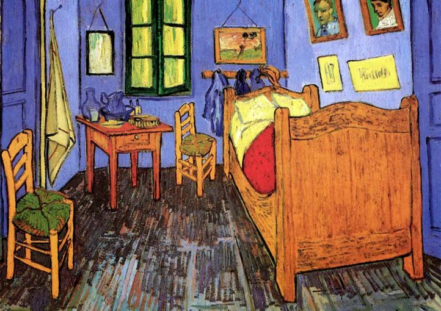
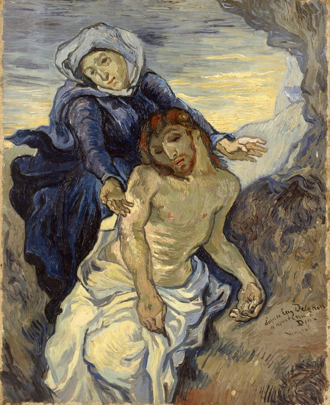
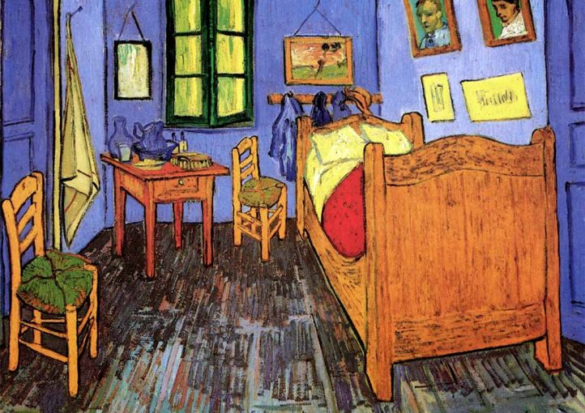
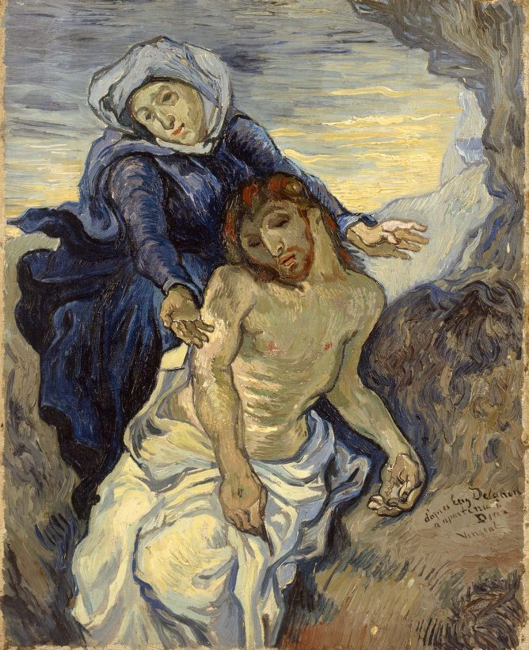

Van Gogh
Vincent Van Gogh nacque il 30 marzo 1853 a Zundert, nei Paesi Bassi. Era figlio di un pastore protestante e durante l'infanzia patì molto il suo ruolo di sostituto del fratello, nato morto un anno esatto prima di lui, a cui pure era stato dato il nome Vincent. Il piccolo Vincent fu un bambino solitario e frequentò la scuola in modo molto irregolare, finché a quindici anni non la abbandonò definitivamente. Da adolescente sviluppò un carattere assai difficile e una personalità mutevole e instabile. Anni dopo avrebbe commentato: «La mia giovinezza è stata triste, fredda e sterile».
 


